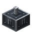
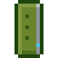

Reference: pages
Reference
Link Card
encodedlogistics:link_card · Item · Stacks to 64 · Creative tab: Encoded Logistics: Parts & Tools
Pairs and links things: sneak-use it on one end to store it, then use it on the partner. It pairs Network Bridges, Point-to-Point Links, Optical Multiplexers and Transport Shelves; carries a segment or network to a rack switch, Router, Trunk Port or multiplexer channel; and links Wireless Bridges and Ports to a Wireless Controller. Sneak-use in the air to clear it.
Link Card
Shift: Pairs Network Bridges and Point-to-Point Links, and links segments and networks to rack devices. Sneak-use on one to store it, then use on its partner (a segment - a Segment Isolator - on a rack's switch; a network - any block of it - on a Router). Sneak-use in the air to clear.
Works with
 Network Bridge
Network Bridge Point-to-Point Link
Point-to-Point Link Segment Isolator
Segment Isolator Router
Router Trunk Port
Trunk Port Wireless Controller
Wireless Controller
Wireless Bridge Wireless Ingress Port
Wireless Ingress Port Wireless Egress Port
Wireless Egress Port Small Wireless Bridge
Small Wireless Bridge Optical Multiplexer
Optical Multiplexer Optical Multiplexer (Rack)
Optical Multiplexer (Rack) Optical Transport Shelf
Optical Transport Shelf
Transponder Card
How to get it
encodedlogistics:link_card
Used to make
Nothing.
Where it's documented
- Bridges and links (Networking)
- Networking (Networking)
- Switches and VLANs (Networking)
- Routers (Networking)
- Segments (Networks)
- Cable parts (Networks)
- Wireless (Networking)